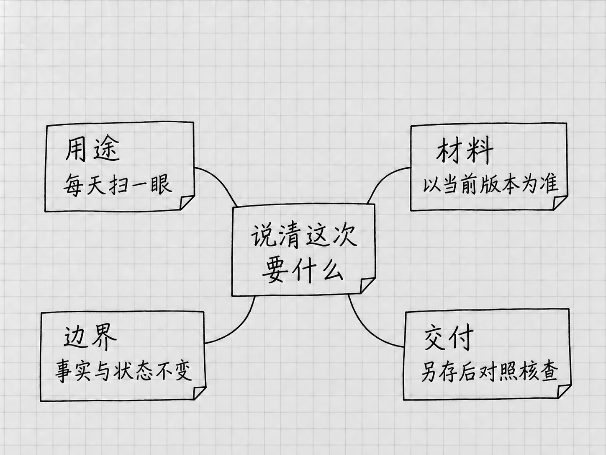

第14章 把想法说清楚：让Codex知道你要什么
到这里，你已经会打开项目、提供材料、选择设置，也知道怎样找到和检查成果。接下来对结果影响最大的，是你怎样描述要做的事。
这里没有什么特殊话术要学。平时说话，很多东西可以省略，因为对方熟悉情况；交给Codex时，省掉的可能正是决定结果方向的信息。我们要补的就是这一部分，篇幅可以很短。
先说明结果要拿来做什么
同一份待办清单，可以有不同的呈现方式。自己每天扫一眼，会希望先看到还没做的事；交给别人核对原记录，保持原来的事项顺序更方便逐项比较。
只说「整理得更好一点」，Codex得猜哪一种算好。改成下面这样，方向就明确了：
我每天只用这份清单快速看还没做的事。请把未完成事项放前面，已完成事项放最后；日期未定仍照实保留，不替我安排时间。
用途解释了为什么要这样排，后面的要求则划定了不能擅自补的内容。一个排版术语都没有用，选择照样说清了。
给自己的短备忘，和给不熟悉背景的人看的说明，对背景、长度和解释程度的需要也不同。这种差别只要会改变结果，就值得告诉它。官方关于用途与交付的建议
把材料的角色说出来
「参考这个文件」可以有很多意思：依据其中的事实，模仿它的格式，检查它有没有错误，或者在它上面直接修改。文件相同，动作不同。
可以具体到：
以「待办清单-v2.txt」的事实为准，参考另一份清单的分组方式。只借用分组思路，不增加另一份里的事项；另存新文件。
这句话说明了事实来源与形式参考各是哪一个，参考材料也就不会反客为主。两份材料互相冲突时，可以规定先报告分歧，等你确认。
材料中尚未确定的信息，要保持原来的身份。「准备约维修」还没有预约，「建议周末整理」也没有定下周末。你已经知道的新进展可以直接补充，并说明它替代了哪条旧信息。
哪些是必须，哪些只是偏好
完成标准最好能对应实际检查。「四件事都保留，发照片只出现一次，数量仍是10张，文件保存到结果文件夹」，每一项都有办法检查。
「看起来专业」就宽泛得多。可以进一步说明：句子短一些，每件事的动作写在前面，补充条件放下一行。这样做，是把模糊的感受转成几个影响阅读的具体选择。
必须保持的事实与可以调整的表达，分开说。日期和数量不能变；条目顺序、换行和措辞可以调整。Codex就知道该把精力用在哪一部分。
完成标准贵在管用。四件待办，写几条真正影响使用的就够了。规则写得越多，互相冲突的机会越大，到时候它难以判断该听哪一条。
缺信息时，让它知道怎样处理
有些缺失必须问清，例如到底要覆盖旧文件还是另存。有些可以暂时保留，例如整理书桌的日期未定。有些只是风格选择，可以让Codex给一个建议并说明理由。
你可以这样安排：
影响事实、修改范围或保存位置的问题先问我；没有依据的日期保留未定。其他排版细节可以按便于扫读的方式处理，完成后说明主要调整。
这样它就知道哪些决定需要你，哪些可以自主处理，既不会凡事都猜，也不会每换一个小标题都停下来问。
自己一时也说不清要什么，可以先说用途，请它提出真正影响结果的几个问题，回答以后再决定做法。下一章的Plan，就是在需要先商量方案时使用的入口。
不用把工具内部的每一步都规定好
你可以要求先核对原材料、再保存、最后报告检查结果。至于它内部怎样读取、排序或写文件，一般交给它自己安排。
操作规定得过细，可能把更合适的做法挡在外面。你要的是一份没有漏项的清单，先读哪一行、再处理哪个标点，交给它安排。对零基础使用者来说，把对象、结果、边界和判断依据说清楚就够了。
确实需要限定步骤时，通常有具体原因。先保存副本再修改，是为了保留当前成果；先给方案再执行，是因为两种做法影响不同；发送给别人之前要确认，是因为事情已经超出本地草稿的范围。把原因一起说出来，要求更容易被正确理解。
一段完整请求可以这样长出来

图：从用途和当前材料出发，说清保留条件、保存位置和检查依据。
从「把清单弄得好看一点」开始，我们已经补出了用途、材料、保留条件和交付方式。可以合成这样一段：
我想每天快速查看还没完成的事。以「结果/待办清单-v2.txt」为当前版本，未完成事项在前、已完成事项在后，每件事先写动作，再写日期与补充要求。
四项内容、日期、数量和当前完成状态保持不变。没有确定的日期继续保留未定，不安排新日程，不代办清单中的事情。
另存为「结果/待办清单-每日查看.txt」，保留现有版本。保存后对照v2检查事实与状态是否一致，告诉我实际文件位置和仍未确定的信息。
这段话只是一个例子。任务简单时，一句话就够；材料或影响范围更复杂时，再补相应条件。检验的办法是：读完这段要求，你自己知道怎样判断它完成了没有。
第一版出来以后，再根据具体差异反馈。要求写得好，第一版仍然可能有错，但问题更容易被发现，下一次修改也有明确方向。